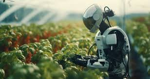
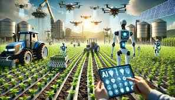

Discover the future of technology through robotics.
*Robots can be used in various industries such as manufacturing, healthcare, and more.
*example ofvirtual assistant, and more.
*1.Forming Robot,and more.
*Advancements in robotics are changing the way we live and work.
*example of agriculture,and more.
*2.Working Robot,and mor.
*Robots are also being used in space exploration and research.
* example of Generative AI, and more.
*3.Agriculture,and more.